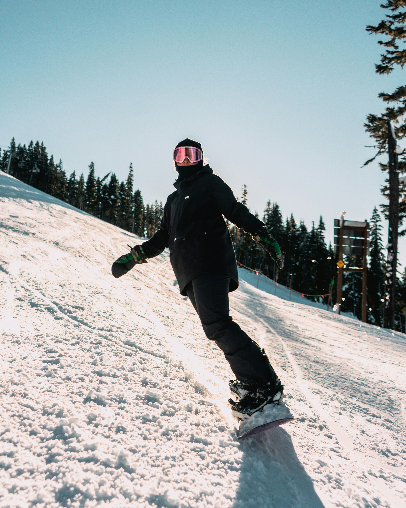
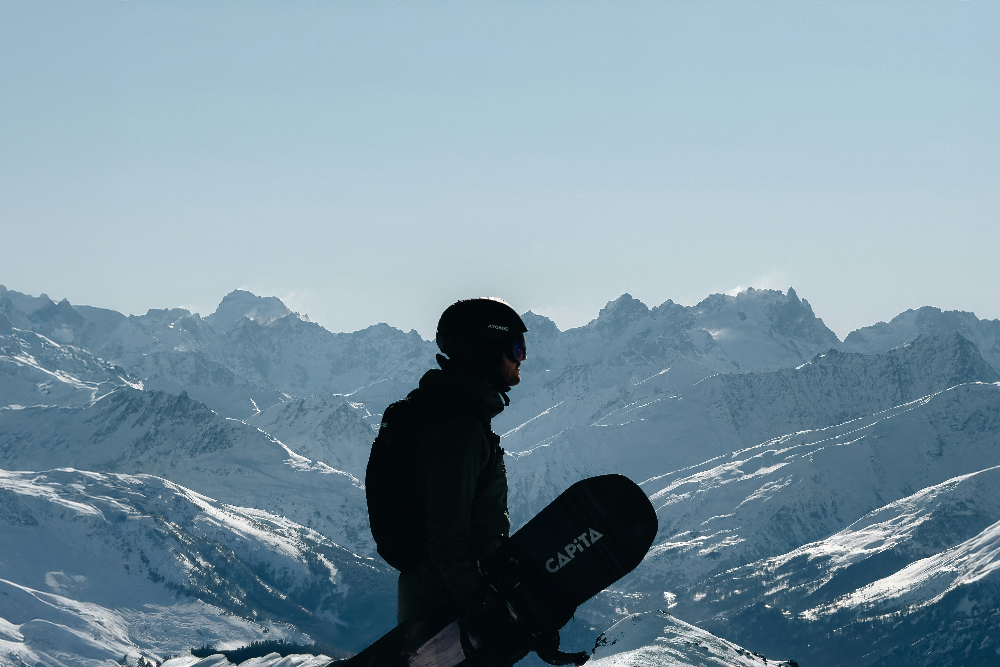
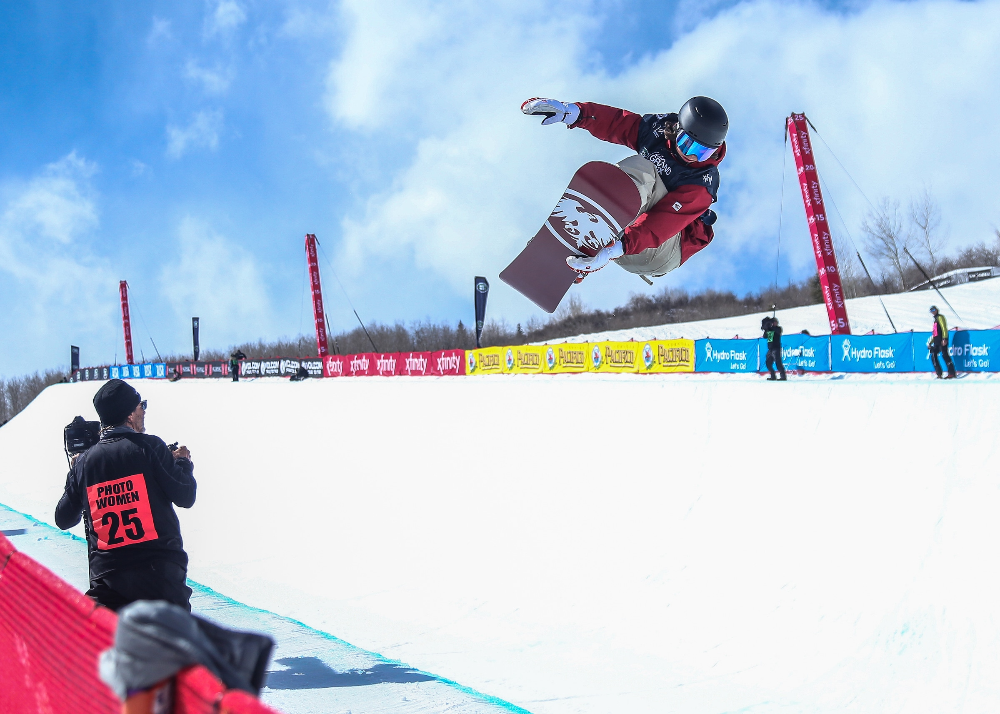
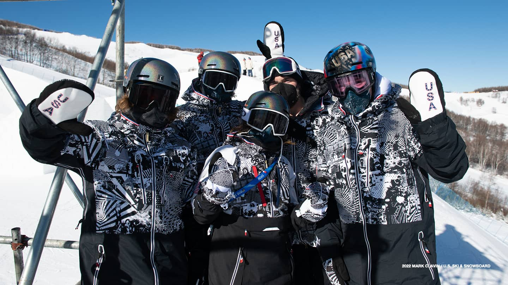
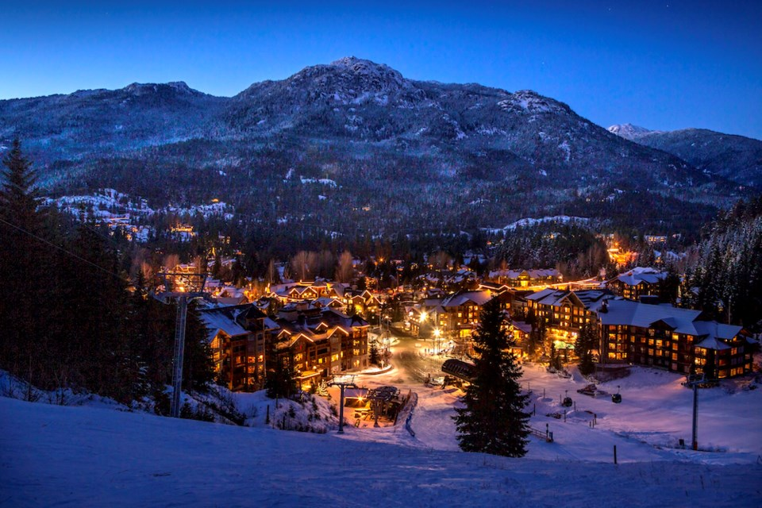

What Is Snowboarding?
Snowboarding is a winter sport where riders descend snowy slopes using a single board attached to their feet. Born in the 1960s as a mix of surfing, skateboarding, and skiing, it has grown into a global phenomenon with millions of enthusiasts worldwide.
Whether you're drawn to freestyle tricks, carving groomers, or exploring untouched backcountry powder, snowboarding offers a unique blend of athleticism, creativity, and fun.
History & Evolution
The first snowboards were homemade “snurfers” — wooden boards without bindings. Over time, innovators added edges, bindings, and new shapes that allowed for carving, tricks, and jumps. By the 1990s, snowboarding was exploding in popularity and became part of mainstream winter sports.
Snowboarding debuted at the 1998 Winter Olympics in Nagano, and since then, riders have continued pushing boundaries with new tricks, bigger jumps, and creative terrain use.
Competitions & Events
Snowboarding competitions showcase the sport's progression and bring riders from around the world together. The X Games, established in the 1990s, became one of the most important stages for freestyle snowboarding, highlighting big air, slopestyle, and halfpipe events.
Snowboarding entered the Winter Olympics in 1998, cementing its place as a global sport. Today, events like the Dew Tour and Natural Selection Tour continue to push creativity and progression, from urban-inspired park setups to backcountry freestyle contests.
These competitions not only test skill but also inspire new generations of riders by broadcasting snowboarding's most innovative tricks and styles to a worldwide audience.
Culture & Community
Snowboarding isn't just about the sport — it's a culture. From local slope crews to international competitions, riders share knowledge, style, and creativity. Video parts, snowboarding brands, and events like the X Games (XG) and Winter Olympics keep the sport progressing and inspire the next generation of riders.
Top Snowboarding Destinations
From local hills to world-class resorts, snowboarding offers destinations for every type of rider. Some of the most popular locations include:
- Whistler Blackcomb (Canada): The largest resort in North America, offering endless terrain for all levels.
- Aspen Snowmass (USA): Famous for its world-class parks and international competitions.
- Niseko (Japan): Known for deep powder and incredible backcountry access.
- Laax (Switzerland): A freestyle mecca with legendary halfpipes and terrain parks.
Each resort has its own unique terrain, culture, and snow conditions, ensuring that every trip offers a new experience on the slopes.